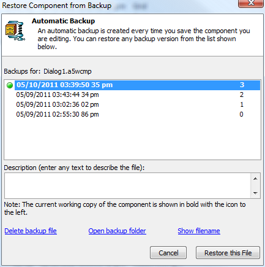
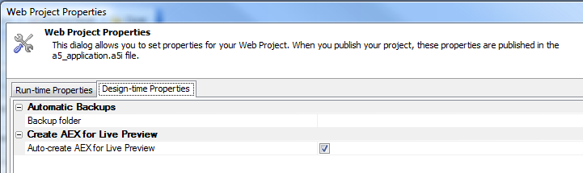

Restore component from backup
To restore a component from a backup, select the component in the Web Projects Control Panel, right-click, and select Restore backup. You will see a dialog similar to the following
You control the location of the backup folder for a Web Project in Web Project Properties. Controlling the location allows you to use a special folder that will be backed up automatically, for example a Dropbox folder.

Watch video